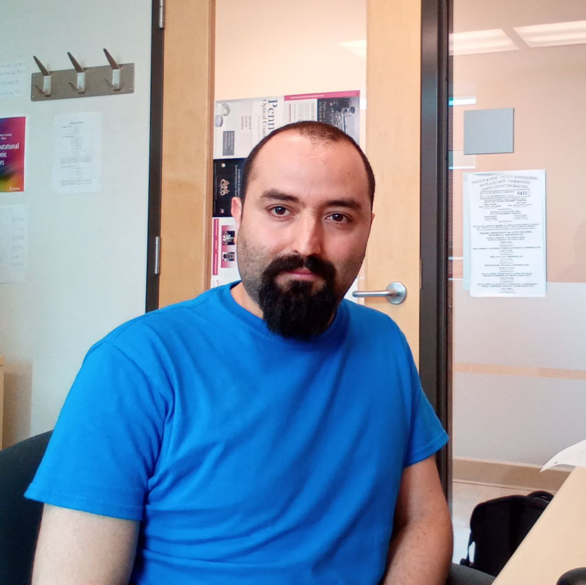

Dr. Hassan Allami
Advanced Research Complex ARC
25 Templeton Street,
Ottawa, ON, Canada.
K1N6N5
email: mallami@uottawa.ca
Areas of interest:
- Condensed matter theory.
- Correlated materials.
- Theory of superconductivity.
- Quantum magnetism.
- Plasmonics.
- Topological qubits in nanomaterial.
Education:
- 2019 (Ph.D): University of Utah, USA.
Topic: Strongly Correlated Systems, Quantum Magnetism and Superconductivity.
Supervisor: Prof. Oleg Starykh
- 2010 (M.Sc): Plasma Engineering, Shahid Beheshti University, Iran.
Thesis: Fractional Approach to Anomalous Transport Modelling.
Supervisor: Prof. Babak Shokri
- 2007 (B.Sc): Electrical Engineering, Tehran University, Iran.
Project: Planning Teaching Methods for Introducing Special Relativity to the Engineering Undergraduate Students in Electromagnetic Courses.
Supervisor: Prof. Jalil Rashed
Home |
Curriculum Vitae |
Last modified: